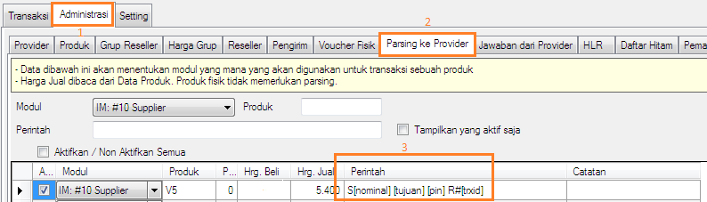
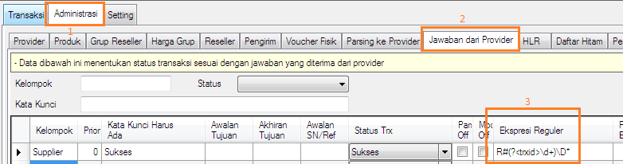

Transaksi dengan RefID
Transaksi menggunakan Gtalk/XMPP/Jabber sangat bergantung pada koneksi internet. Tidak jarang dikarenakan koneksi tidak stabil atau lambat menimbulkan kerugian, 1 transaksi terproses 2 kali atau lebih di Supplier karena kita melakukan kirim ulang transaksi berulang kali saat internet tidak stabil. Guna mengantisipasi hal tersebut, mulai versi 3.3 OtomaX menyiapkan fitur RefID, dimana dengan ini tidak akan terjadi lagi kejadian di atas.
Berikut ini langkah - langkah transaksi menggunakan RefID:
- Pastikan Anda menggunakan OtomaX versi 3.3 atau lebih baru.
-
Pastikan Supplier Anda menyediakan format transaksi dengan menggunakan parameter [refid] dan diletakkan di key: transaksi urutan pertama yakni key: Transaksi, bukan Transaksi2, Transaksi3, Transaksi4 dan seterusnya. Silahkan tanyakan ke supplier Anda. Contoh formatnya ialah:
[kodeproduk] [tujuan] [pin] R#[refid]
Perlu diketahui bahwa tidak semua software server pulsa mendukung parameter [refid], diantara software pulsa yang support ialah OtomaX. Jadi kalau Supplier Anda bukan pengguna OtomaX arahkan untuk membeli OtomaX, klik disini. -
Di setiap balasan yang dikirimkan Supplier Anda, pastikan melampirkan RefID. Contoh balasan yang melampirkan RefID ialah:
R#3245 Isi ulang Telkomsel Nasional S10.08123456789 GAGAL. Nomor tujuan salah.
3245 di atas adalah RefID. Sebagai tambahan informasi apabila Anda sebagai Supplier, Anda dapat menambahkan RefID di setiap balasan transaksi dengan menyisipkan parameter [refid]. Contoh:
R#[refid] [namaproduk] [kodeproduk].[tujuan] GAGAL. [keterangan].R#[refid] [namaproduk] [kodeproduk].[tujuan] SUKSES, SN: [sn]. Saldo ([saldolama] - [harga]) = Rp[saldo].
-
Tambahkan parameter [trxid] di parsing transaksi. Adapun format parsing sesuaikan dengan format Supplier. Perhatikan gambar di bawah ini:

Dengan menggunakan parameter [trxid] maka parameter [counter] tidak diperlukan lagi, sebab sudah terakomodir oleh parameter [trxid]. -
Pada penangkap jawaban klik disini, tangkap RefID yang terlampir di balasan Supplier dengan menggunakan regex. Adapun regex yang digunakan sesuaikan dengan susunan balasan Supplier. Untuk membuat regex klik disini (mohon dibaca dari halaman 1 sampai dengan halaman terakhir).

- Selesai
Catatan: Kolom Ref. ID di menu Transaksi -> Transaksi pada OtomaX hanya akan terisi manakala Anda menjadi Supplier dan Reseller yang mengambil stok ke Anda bertransaksi dengan menggunakan refid. Apabila tidak, maka kolom tersebut akan kosong.